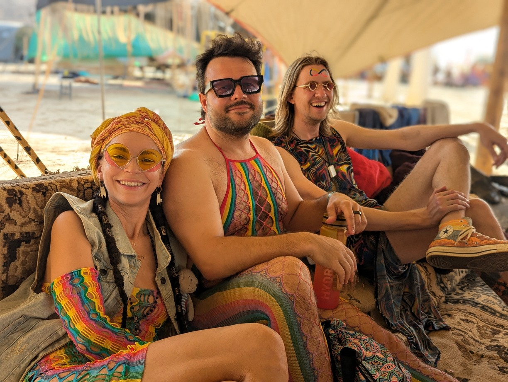

MOOWS / Issue 01 · August 2026
A brief history of mooncow expansion
2018
10/04/2018. A WhatsApp group is created by Dora Militaru.
The First Nowhere 2018 (free-camp 15).
2019
9/02/2019. At an Aquarius weekend in Somerset a group of “not yet cows” gather, after reading H.G. Wells & improvising a blues song, the term “MOONCOW” is coined.
“A crackling and smashing of the scrub appeared to be advancing directly upon us, and then, as we squatted close and endeavoured to judge of the nearness and direction of this noise, there came a terrific bellow behind us, so close and vehement that the tops of the bayonet scrub bent before it, and one felt the breath of it hot and moist. And, turning about, we saw indistinctly through a crowd of swaying stems the mooncalf’s shining sides, and the long line of its back loomed out against the sky.”
H.G. Wells · The First Men in the Moon
11/02/2019. The WhatsApp group is renamed 🌜🐮🌛 by Milo.
Nowhere 2019 (free-camp 30).
2020
MoonCow Festival (MCF)

2021
MCF 2a
MCF 2b
2022
Nowhere 2022. Mooncows build a Camp (53)
MCF 3

2023
Nowhere 2023 (62)

MCF 23
2024
Nowhere 2024 (54)

Luavaca
Decom 24
2025
Moonchaos
Nowhere 2025 (55)


Decom 25
2026
Moonchaos 2
MCF 26
Nowhere 2026 (25)

Borderland 26